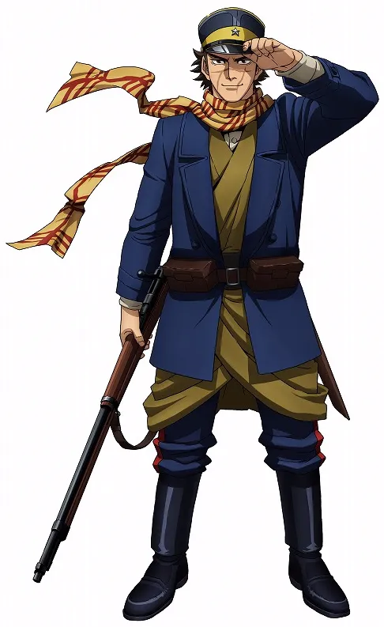

- Nome: Darryl Fogg
- Idade: 24 anos
- Altura: 1,88m
- Ocupação: Guarda da cidade - sessão zero
Agente da Ordem - segunda temporada - Relacionamentos: Irina Ivanov - família adotiva
Amber - família adotiva
Coração de Ouro, Mente Inocente e Alma de Guerreiro
Era um jovem guerreiro, agia de um jeito peculiar mas sempre um cavalheiro.
Seu objetivo era estudar para se tornar policial, até que um dia duas moças aparecem pequena cidade para investigar atividades suspeitas da família do prefeito.
Seu instinto falou mais alto, indo investigar junto com elas. Acabou ajudando a salvar a vida de Irina Ivanov, que estava enfrentando de frente o filho possuído da família.
Após isso, foi "convidado" para a Ordem, pois tinha presenciado demais.
Curiosidades
-
Tem um sotaque alemão.
-
Foi o segundo personagem que encontrei na minha sessão zero de Irina Ivanov, a primeira foi a Amber.
-
Morreu em uma dos poucas sessões da segunda temporada.
Todos que estavam na cena (jogares e NPCs) tiraram dados ruins, então ele pulou em cima da granada, explodindo no processo.
- Seu design foi retirado do protagonista de Golden Kamuy, Saichi Sugimoto.